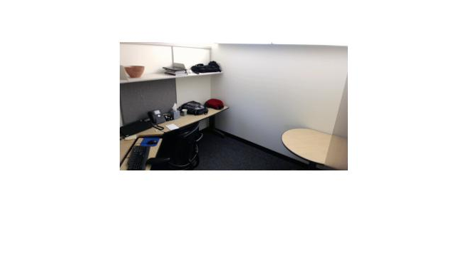
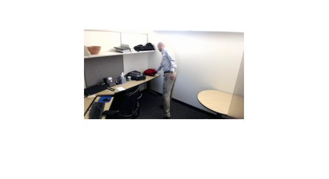
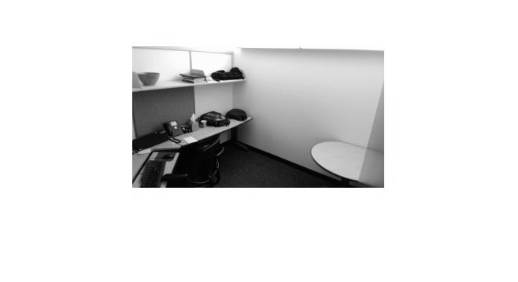
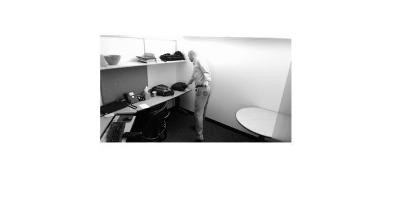
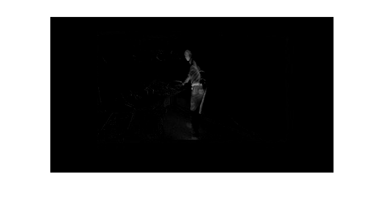
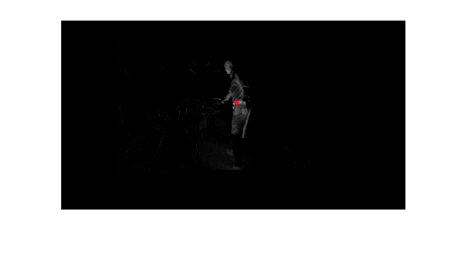
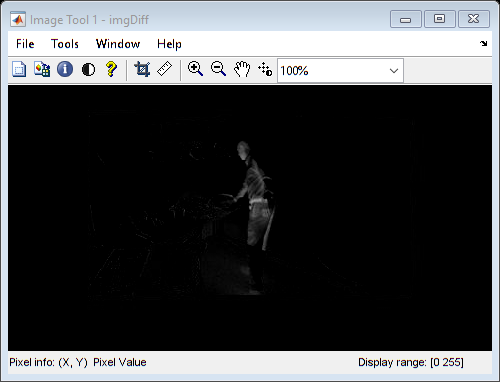
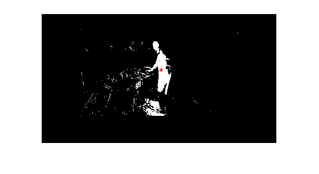
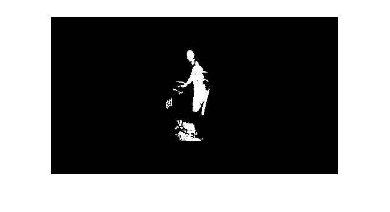
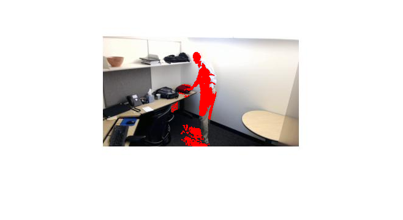

Copyright 2013-2015 The MathWorks, Inc.
Contents
- Read in Images
- Display Color Images
- Convert Images to Black and White
- Display Black and White Images
- Subtract Images
- Find Maximium Location of Difference
- Use imtool to Determine Threshold and Length
- Threshhold Image
- Fill in Regions
- Overlay Onto Original Image
- Only Care About Things Large Than 80
- Determine if Change is Significant
Read in Images
img1 = imread('TestImage1.jpg'); img2 = imread('TestImage2.jpg');
Display Color Images
figure imshow(img1) figure imshow(img2) 
Convert Images to Black and White
img1BW = rgb2gray(img1); img2BW = rgb2gray(img2);
Display Black and White Images
figure imshow(img1BW) figure imshow(img2BW) 
Subtract Images
imgDiff = abs(img1BW - img2BW);
% imDiff = imsubtract(img1BW - img2BW);
figure
imshow(imgDiff)
 Find Maximium Location of Difference
maxDiff = max(max(imgDiff)); [iRow,iCol] = find(imgDiff == maxDiff); [m,n] = size(imgDiff); imshow(imgDiff) hold on plot(iCol,iRow,'r*')
Use imtool to Determine Threshold and Length
imtool(imgDiff)
Threshhold Image
imgThresh = imgDiff > 8; figure imshow(imgThresh) hold on plot(iCol,iRow,'r*') hold off
Fill in Regions
imgFilled = bwareaopen(imgThresh, 15); figure imshow(imgFilled)
Overlay Onto Original Image
Utility from File Exchange
imgBoth = imoverlay(img2,imgFilled,[1 0 0]); figure imshow(imgBoth)
Only Care About Things Large Than 80
imageStats = regionprops(imgFilled, 'MajorAxisLength');
imgLengths = [imageStats.MajorAxisLength];
idx = imgLengths > 80;
imageStatsFinal = imageStats(idx);
disp(imageStatsFinal)
MajorAxisLength: 107.0221
Determine if Change is Significant
if isempty(imageStatsFinal) disp('Nothing Different Here') else disp('Something is Here!') end
Something is Here!